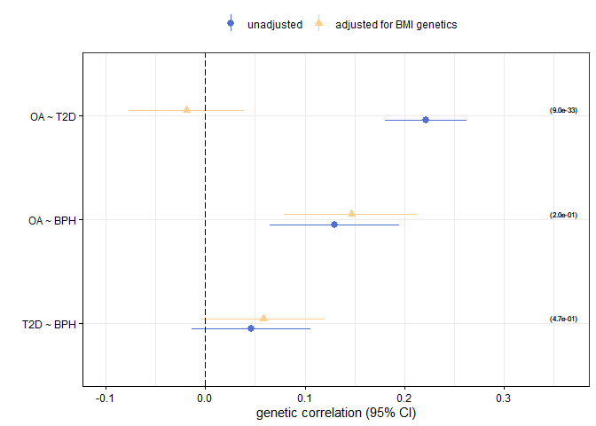

For details on the method see our preprint. If you use the package partialLDSC please cite:
Mounier et al. (2024) Genetics identifies obesity as a shared risk factor for co-occurring multiple long-term conditions. medRxiv https://doi.org/10.1101/2024.07.10.24309772
Overview
partialLDSC is an R-package to estimate partial genetic correlations from GWAS summary statistics, and compare them to their unadjusted counterparts, to quantify the contribution of a given confounder in explaining genetic similarity between conditions. The partial genetic correlations between two conditions correspond to their genetic correlation, holding the genetic effects of a potential confounder constant. Differences between unadjusted and partial estimates are not necessarily due to a causal effect of the potential confounder on both conditions and further (causal inference) analyses might be needed to better describe the relationship between the conditions and the potential confounder.
It relies on cross-trait LD-score regression (LDSC), as first described by Bulik-Sullivan, B. et al. - “An atlas of genetic correlations across human diseases and traits.”.
Our implementation of LDSC is based on the one from GenomicSEM. Moreover, the pre-processing of the GWAS summary statistics prior to analysis should be done using the munge function they provide.
There are two main functions available:
partial_ldsc()
main function to estimate unadjusted and partial genetic correlations (as well as heritabilities, on the observed scale only), and compare them to each other to assess if adjusting for the potential confounder’s genetic significantly affect the pairwise genetic correlation estimates.forest_plot()
main function to visualise the results.
More details about their usage can be found in the manual.
Installation
You can install the current version of partialLDSC with:
# Directly install the package from github
# install.packages("remotes")
remotes::install_github("GEMINI-multimorbidity/partialLDSC")
library(partialLDSC)Usage
To run the analysis with partialLDSC different inputs are needed:
1. The munged GWAS summary statistics (conditions & confounder):
More information about how to munge the summary statistics can be found in the GenomicSEM R-package documentaion, here.
2. The input files for LDSC (ld):
LD scores are needed, these are the same as the ones needed by the GenomicSEM R-package and can be directly downloaded from the link they provide.
Expects LD scores formated as required by the original LD score regression software. Weights for the european population can be obtained by downloading the eur_w_ld_chr folder in the link below (Note that these are the same weights provided by the original developers of LDSC): https://utexas.box.com/s/vkd36n197m8klbaio3yzoxsee6sxo11v
Analysis
Before running the examples, please make sure to have downloaded the ld-scores files. You may also need to modify the ld parameters to indicate the correct path. Note that when running the analysis with your own GWAS summary statistics, you will first need to properly munge them.
- Example A
# Using GEMINI GWAS summary statistics for three conditions
# (osteoarthitis: OA, type 2 diabetes: T2D, benign hyperplasia of prostate: BPH)
# + GIANT GWAS summary statistics for the confounder (BMI)
# (1,150,000 SNPs - stored in gzipped files)
OA_file <- system.file("Data/", "OA_GEMINI.sumstats.gz", package="partialLDSC")
T2D_file <- system.file("Data/", "diabetes_type_2_GEMINI.sumstats.gz", package="partialLDSC")
BPH_file <- system.file("Data/", "BPH_GEMINI.sumstats.gz", package="partialLDSC")
BMI_file <- system.file("Data/", "BMI_Yengo_2018.txt.sumstats.gz", package="partialLDSC")
# launch analysis (using default number of blocks)
A = partial_ldsc(conditions = c(OA_file, T2D_file, BPH_file),
confounder = BMI_file,
condition.names = c("OA", "T2D", "BPH"),
confounder.name = "BMI",
ld = "~/eur_w_ld_chr",
log.name = "Example_A")Show log
## Multivariate ld-score regression of 4 traits (3 conditions: OA, T2D, BPH + confounder: BMI) began at: 15:13
## Number of blocks used to perform the block jacknife used to estimate the sampling covariance matrix (V) is 200
## Reading in LD scores from: C:\Users\nm572\OneDrive - University of Exeter\Documents\Exeter\Projects\Data\eur_w_ld_chr
## Read in summary statistics [1/4] (OA) from: C:\Users\nm572\OneDrive - University of Exeter\Documents\R\win-library\4.1\partialLDSC\Data\OA_GEMINI.sumstats.gz
## Out of 1168143 SNPs, 1155445 remain after merging with LD-score files
## Removing 0 SNPs with Chi^2 > 766.622; 1155445 remain
## Read in summary statistics [2/4] (T2D) from: C:\Users\nm572\OneDrive - University of Exeter\Documents\R\win-library\4.1\partialLDSC\Data\diabetes_type_2_GEMINI.sumstats.gz
## Out of 1161441 SNPs, 1153850 remain after merging with LD-score files
## Removing 15 SNPs with Chi^2 > 446.142; 1153835 remain
## Read in summary statistics [3/4] (BPH) from: C:\Users\nm572\OneDrive - University of Exeter\Documents\R\win-library\4.1\partialLDSC\Data\BPH_GEMINI.sumstats.gz
## Out of 1166954 SNPs, 1160509 remain after merging with LD-score files
## Removing 1 SNPs with Chi^2 > 203.231; 1160508 remain
## Read in summary statistics [4/4] (BMI) from: C:\Users\nm572\OneDrive - University of Exeter\Documents\R\win-library\4.1\partialLDSC\Data\BMI_Yengo_2018.txt.sumstats.gz
## Out of 1018130 SNPs, 1014995 remain after merging with LD-score files
## Removing 6 SNPs with Chi^2 > 795.64; 1014989 remain
##
## Estimating heritability [1/10] for: OA
## Heritability Results for trait: OA
## Mean Chi^2 across remaining SNPs: 1.4953
## Lambda GC: 1.22
## Intercept: 0.8991 (0.0113)
## Ratio: -0.2036 (0.0229)
## Total Observed Scale h2: 0.039 (0.0014)
## h2 Z: 28
##
## Calculating genetic covariance [2/10] for traits: OA and T2D
## 1145694 SNPs remain after merging OA and T2D summary statistics
## Results for genetic covariance between: OA and T2D
## Mean Z*Z: 0.2186
## Cross trait Intercept: 0.0299 (0.0076)
## Total Observed Scale Genetic Covariance (g_cov): 0.0158 (0.0016)
## g_cov Z: 10.2
## g_cov P-value: 3.0229e-24
##
## Calculating genetic covariance [3/10] for traits: OA and BPH
## 1151912 SNPs remain after merging OA and BPH summary statistics
## Results for genetic covariance between: OA and BPH
## Mean Z*Z: 0.0934
## Cross trait Intercept: 0.0418 (0.0058)
## Total Observed Scale Genetic Covariance (g_cov): 0.0064 (0.0016)
## g_cov Z: 3.96
## g_cov P-value: 7.3987e-05
##
## Calculating genetic covariance [4/10] for traits: OA and BMI
## 996930 SNPs remain after merging OA and BMI summary statistics
## Results for genetic covariance between: OA and BMI
## Mean Z*Z: 0.6241
## Cross trait Intercept: 0.0446 (0.0112)
## Total Observed Scale Genetic Covariance (g_cov): 0.0394 (0.0019)
## g_cov Z: 20.5
## g_cov P-value: 8.6266e-94
##
## Estimating heritability [5/10] for: T2D
## Heritability Results for trait: T2D
## Mean Chi^2 across remaining SNPs: 2.1342
## Lambda GC: 1.4961
## Intercept: 1.0054 (0.0259)
## Ratio: 0.0048 (0.0229)
## Total Observed Scale h2: 0.1307 (0.0055)
## h2 Z: 23.8
##
## Calculating genetic covariance [6/10] for traits: T2D and BPH
## 1151699 SNPs remain after merging T2D and BPH summary statistics
## Results for genetic covariance between: T2D and BPH
## Mean Z*Z: 0.0113
## Cross trait Intercept: -0.0058 (0.0069)
## Total Observed Scale Genetic Covariance (g_cov): 0.0042 (0.0027)
## g_cov Z: 1.55
## g_cov P-value: 0.12162
##
## Calculating genetic covariance [7/10] for traits: T2D and BMI
## 996408 SNPs remain after merging T2D and BMI summary statistics
## Results for genetic covariance between: T2D and BMI
## Mean Z*Z: 1.0387
## Cross trait Intercept: 0.0487 (0.0152)
## Total Observed Scale Genetic Covariance (g_cov): 0.0894 (0.0038)
## g_cov Z: 23.4
## g_cov P-value: 7.1286e-121
##
## Estimating heritability [8/10] for: BPH
## Heritability Results for trait: BPH
## Mean Chi^2 across remaining SNPs: 1.1591
## Lambda GC: 0.9517
## Intercept: 0.9102 (0.0108)
## Ratio: -0.5646 (0.0676)
## Total Observed Scale h2: 0.0623 (0.0051)
## h2 Z: 12.2
##
## Calculating genetic covariance [9/10] for traits: BPH and BMI
## 1001610 SNPs remain after merging BPH and BMI summary statistics
## Results for genetic covariance between: BPH and BMI
## Mean Z*Z: 0.0049
## Cross trait Intercept: 0.01 (0.0101)
## Total Observed Scale Genetic Covariance (g_cov): -6e-04 (0.0033)
## g_cov Z: -0.175
## g_cov P-value: 0.86117
##
## Estimating heritability [10/10] for: BMI
## Heritability Results for trait: BMI
## Mean Chi^2 across remaining SNPs: 3.9344
## Lambda GC: 2.7869
## Intercept: 1.0199 (0.0277)
## Ratio: 0.0068 (0.0094)
## Total Observed Scale h2: 0.2091 (0.0063)
## h2 Z: 33.3
##
##
## Genetic Correlation Results
## Genetic Correlation between OA and T2D: 0.2216 (0.0208)
## Genetic Correlation between OA and BPH: 0.1295 (0.0333)
## Genetic Correlation between OA and BMI: 0.4361 (0.0182)
## Genetic Correlation between T2D and BPH: 0.0462 (0.0303)
## Genetic Correlation between T2D and BMI: 0.5408 (0.022)
## Genetic Correlation between BPH and BMI: -0.005 (0.0288)
##
##
## Partial genetic Correlation Results
## Partial genetic Correlation between OA and T2D: -0.0189 (0.0296)
## Partial genetic Correlation between OA and BPH: 0.1463 (0.0344)
## Partial genetic Correlation between T2D and BPH: 0.0581 (0.0315)
##
## Analysis finished running at 15:14
## Runtime: 0 minute(s) and 55 second(s)
## Results
ldsc_partial() returns a named list containing the following results:
-
res_diff(pairwise results)
condition.1 : first condition in the pair,condition.2 : second condition in the pair,rg : unadjusted genetic correlation between the two conditions,rg.SE : standard error of the unadjusted genetic correlation between the two conditions,partial_rg : partial genetic correlation between the two conditions,partial_rg.SE : standard error of the partial genetic correlation between the two conditions,rg_cov : covariance between the unadjusted and the partial correlation estimates for the pair,diff.T : test statistic used to test for the difference between the unadjusted and the partial correlation estimates for the pair,diff.P : p-value corresponding to the test statistic used to test the difference between the unadjusted and the partial correlation estimates for the pair.
S: estimated genetic covariance matrix for all conditions + confounder.V: variance covariance matrix of the parameter estimates inS.S_Stand: estimated genetic correlation matrix for all conditions + confounder.V_Stand: variance covariance matrix of the parameter estimates inS_Stand.partial.S: estimated partial genetic covariance matrix for all conditions.partial.V: variance covariance matrix of the parameter estimates inpartial.S.partial.S_Stand: estimated partial genetic correlation matrix for all conditions.partial.V_Stand: variance covariance matrix of the parameter estimates inpartial.S_Stand.I: matrix containing the cross-trait intercepts.
Aditionnaly, log and results files are created in the current working directory :
**<log.name>_ldsc.log** - log file
**<log.name>_difference.tsv** - results file
Example A
### structure of the results
str(A)## List of 10
## $ res_diff :'data.frame': 3 obs. of 9 variables:
## ..$ condition.1 : chr [1:3] "OA" "OA" "T2D"
## ..$ condition.2 : chr [1:3] "T2D" "BPH" "BPH"
## ..$ rg : num [1:3] 0.2216 0.1295 0.0462
## ..$ rg.SE : num [1:3] 0.0208 0.0333 0.0303
## ..$ partial_rg : num [1:3] -0.0189 0.1463 0.0581
## ..$ partial_rg.SE: num [1:3] 0.0296 0.0344 0.0315
## ..$ rg_cov : num [1:3] 0.000451 0.001059 0.000819
## ..$ diff.T : num [1:3] 11.92 -1.29 -0.72
## ..$ diff.P : num [1:3] 9.03e-33 1.96e-01 4.71e-01
## $ S : num [1:4, 1:4] 0.03902 0.01582 0.00639 0.0394 0.01582 ...
## ..- attr(*, "dimnames")=List of 2
## .. ..$ : chr [1:4] "OA" "T2D" "BPH" "BMI"
## .. ..$ : chr [1:4] "OA" "T2D" "BPH" "BMI"
## $ V : num [1:10, 1:10] 1.94e-06 6.56e-07 -5.20e-09 8.45e-07 2.01e-06 ...
## $ S_Stand : num [1:4, 1:4] 1 0.222 0.129 0.436 0.222 ...
## ..- attr(*, "dimnames")=List of 2
## .. ..$ : chr [1:4] "OA" "T2D" "BPH" "BMI"
## .. ..$ : chr [1:4] "OA" "T2D" "BPH" "BMI"
## $ V_Stand : num [1:10, 1:10] 1.93e-30 2.08e-18 -5.98e-19 1.07e-18 7.29e-33 ...
## $ partial.S : num [1:3, 1:3] 0.0316 -0.00102 0.00649 -0.00102 0.09248 ...
## ..- attr(*, "dimnames")=List of 2
## .. ..$ : chr [1:3] "OA" "T2D" "BPH"
## .. ..$ : chr [1:3] "OA" "T2D" "BPH"
## $ partial.V : num [1:6, 1:6] 1.83e-06 5.95e-07 3.32e-07 1.97e-06 2.00e-07 ...
## $ partial.S_Stand: num [1:3, 1:3] 1 -0.0189 0.1463 -0.0189 1 ...
## ..- attr(*, "dimnames")=List of 2
## .. ..$ : chr [1:3] "OA" "T2D" "BPH"
## .. ..$ : chr [1:3] "OA" "T2D" "BPH"
## $ partial.V_Stand: num [1:6, 1:6] 0 0 0 0 0 ...
## $ I : num [1:4, 1:4] 0.8991 0.0299 0.0418 0.0446 0.0299 ...
## ..- attr(*, "dimnames")=List of 2
## .. ..$ : chr [1:4] "OA" "T2D" "BPH" "BMI"
## .. ..$ : chr [1:4] "OA" "T2D" "BPH" "BMI"
### matrix of unadjusted genetic correlations
A$S_Stand## OA T2D BPH BMI
## OA 1.0000000 0.22155702 0.129499318 0.436123972
## T2D 0.2215570 1.00000000 0.046169361 0.540761961
## BPH 0.1294993 0.04616936 1.000000000 -0.005027793
## BMI 0.4361240 0.54076196 -0.005027793 1.000000000
### pairwise results
# in this case, we observed a significant difference between the unadjusted and the partial
# genetic correlation estimates only for OA and T2D.
# This does make sense since the genetic correlation between BMI and BPH is very low,
# explaining why adjusting for BMI does not affect the genetic correlation between BPH
# and the other conditions.
A$res_diff## condition.1 condition.2 rg rg.SE partial_rg partial_rg.SE
## 1 OA T2D 0.22155702 0.02076908 -0.01886781 0.02961074
## 2 OA BPH 0.12949932 0.03327598 0.14634480 0.03435472
## 3 T2D BPH 0.04616936 0.03030614 0.05811963 0.03154903
## rg_cov diff.T diff.P
## 1 0.0004507507 11.9225545 9.029680e-33
## 2 0.0010588452 -1.2925710 1.961595e-01
## 3 0.0008192339 -0.7201883 4.714090e-01
### functions to list conditions / pairs
get_conditions(A)
get_pairs(A)
### forest plot
forest_plot(A)
Runtime
Example A ~ 0 minute(s) and 55 second(s)
Runtime can be influenced by the number of traits.
Results from analyses performed on a Windows 10 laptop - Processor : Intel(R) Core(TM) i5-10310U CPU @ 1.70GHz 2.21 GHz - Memory : 16.0 GB.
Citation
If you use the partialLDSC package, please cite:
Mounier et al. (2024) Genetics identifies obesity as a shared risk factor for co-occurring multiple long-term conditions. medRxiv https://doi.org/10.1101/2024.07.10.24309772